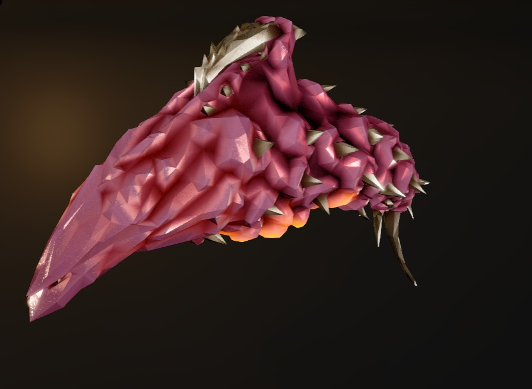
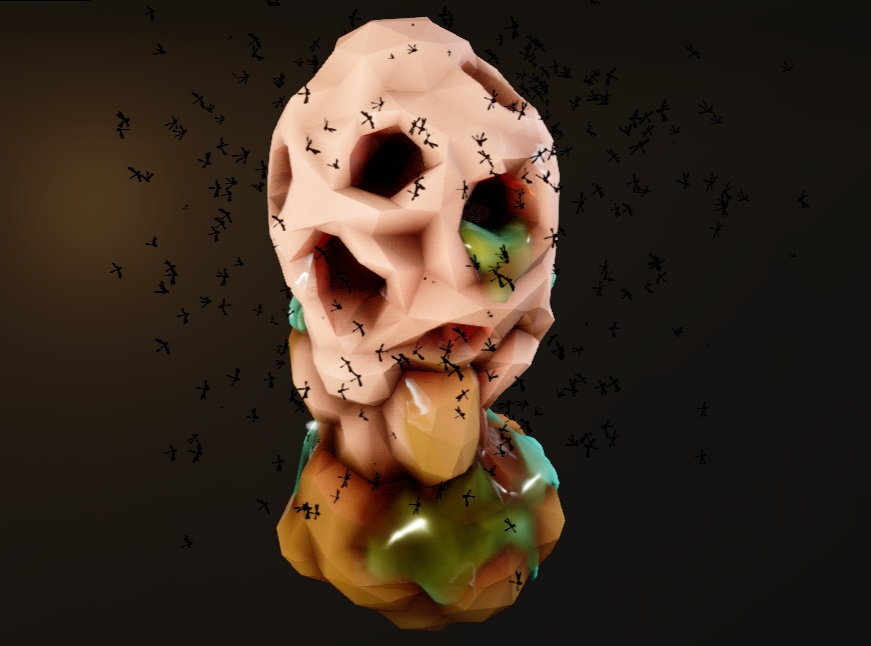
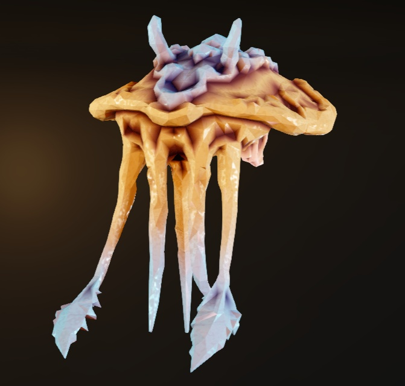
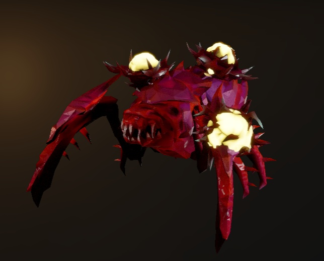
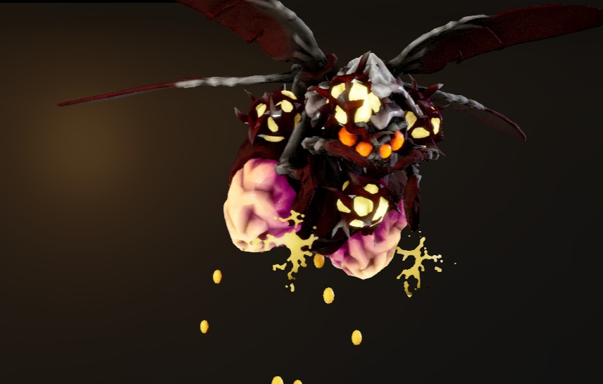

Enemies
The depths of Hoxxes IV are home to an incredibly wide variety of fauna, and almost all of them are looking to kill you. These species are one major part of why Deep Rock Galactic was the only mining corporation that was willing to take their mining operations here. And while not everything there is meant to kill you, the employees of DRG like to live by a "shoot first, question nothing" basis. From the spider bread bug Glyphids and high flying Macteras, to the technological terrors that come from rival companies and pathological infections of the lithophage "Rockpox" virus, Hoxxes is home to many a hellspawn, none of which will spare you any mercy.
Basics of Combat
Before you can learn how each enemy works and how to deal with them best, you need to learn how combat works in the first place. For starters, there are over 20 different dypes of damage that both your weapons and the enemies' attacks can deal, including kinetic damage done by bullets, melee damage from your pickaxes and drills, armor breaking capabilities, fire damage, cold damage, and stunning capabilities. Explaining all of these would take up way too much, so I would say the best way to learn these types is to see them in action yourself, or read up on how they work in the miner's manual in game. Next up, you'll need to learn how armor works to fight the larger enemies better. There are three basic types of armor: Light armor that reduces damage taken, but can be broken off, Heavy armor that block all incoming damage but will break after sustained fire or an explosive, and unbreakable armor, meaning your only forms of damage is from shooting the weakpoint or explosives. Finally, you'll need to learn where to target the weak points of enemies. Often times, you'll know if something is the weakpoint very easily, since weakspots have a tendency to glow, and if your gamer instincts are high enough, you should know to shoot that thing in particular. If you don't see anything glowing to shoot, then a good general rule of thumb is to shoot them in the head. You'll know when you're really doing damage when you hear a noise similar to that of a hitmarker. Otherwise, just shoot it normally, you'll be able to see if you're doing damage since you can see enemy healthbars.
Glyphids
Glyphids are the most common species of bug that you'll come across on your time on Hoxxes, and therefore, are the most varied. The designs of the glyphids are similar to that of a spider, allowing them to climb on all angles of a surface with ease, and despite their lack of any eyes, they find their way around via echolocation. These screams that they produce are actually your best way to determine the type of a glyphid that you can't see or know is there, and each of them are distinct in their own ways, so make sure you memorize them all as best as you can. From the smallfries that are no bigger than your shoe, to absolute behemoths with a size that's on par with that of a large truck, you'll need to learn and memorize how each of them work like they're a bible at Sunday School, as these guys are public dwarf enemy #1.
Swarmer

The smallest known variant of glyphid, swarmers are babies that are pretty much fresh out of an egg and are already wanting to hunt you down. All it'll take to kill one is a well placed bullet or swing of your pickaxe, though you should not be mistaken, swarmers can be a very large problem when in a large group.
Grunt
The grunts are without a doubt THE most common enemy that you'll be coming across. Covered in a light carapace of armor across all but their heads, they're certainly no push over, especially when they're in a large enough swarm. Give them a bullet or pickaxe swing to the head, and they'll fall right over.
Grunt Guard
The very heavily armored alternative of the grunts, these guys boast much heavier armor, especially on their front legs. In fact, they're smart enough to use their front legs as a shield when they're approaching you, and even though they move significantly slower when blocking, that armor can be a pain to chew through. Couple that on top of the fact that other grunts are smart enough to take cover behind them, and grunts can be a fairly big nuisance during a swarm.
Grunt Slasher

The much more aggresive mutation of the grunt, slashers aren't afraid to rush up and be on the offensive. Decked out in spikes all over its body and much sharper jaws, the slasher grunts mean business. These spikes aren't just for show though, as they deal more damage than a normal grunt and will temporarily stun you when hit, causing your movement to slow and make you a ripe target for a large swarm. Make sure to kill them quickly and from a distance.
Warden
Wardens are the only supportive enemy in the entire game, opting to give all glyphids within a small radius an increase in defense as long as the warden is alive. On top of this, wardens will spawn in reinforcements when they're left alone, prolonging their death, since they know you're going to target them once you know they're there. If you don't, you should be able to find them very easily, since the beam they produce that give the buff is very visible and easy to trace. Shoot the big purple ball on their back for an easy death, and then take care of the other enemies. High priority target, take care of them as quick as you can.
Stingtail
Arguably the most annoying of the glyphids, and perhaps the game, stingtails are a very strange deviation from the rest of the glyphid genus due to their strangely long and flexible tail. It uses this tail as a grappling hook of sorts, pulling you closer towards it from afar ala Scorpion from Mortal Kombat. However, the noise that they produce when they're about to grab you is incredibly audible, so when you hear this noise, start running and don't stop until you hear the grab happen, you should be able to dodge it. Whenever you get an opening, make sure to prioritize shooting them in the mouth, or shoot off their armor on their back to find their weak point.
Praetorian
The most common of the larger sized glyphids, praetorians are also the most common of the more heavily armored glyphids, as its back and front legs boast hefty green armor plating to protect its softer backside. Praetorians are capable of vomiting up a corrosive poison in a very large area, yet they stand completely still when doing this attack, giving you an opening to attack. To add to this volatility, praetorians leave behind a large posion cloud of this acid upon death, but even this can be used to your advantage, as this cloud is incredibly flammable. Just make sure to focus on their back or shoot them in the mouth if you can't crack their armor, and they'll fall over with little to no problem. NOTE: Praetorians also come in a frost and radioactive variant in the glacial strata and radioactive exclusion zone respectively, but both variants effectively act the same as the normal one.
Oppressor
Every horde shooter game just wouldn't be the same if it didn't have an enemy that was just a walking tank that wasn't also a boss, and the oppressor is here to fill that slot. Oppressors are praetorians that are so monstrously mutated that it is impossible to shoot through their armor now, meaning you HAVE to shoot them from behind. Which can be done rather easily due to its slow turning speed and stationary attacks, but these attacks are nothing to laugh at. The acid spit the praetorian normally uses has been replaced by two unique shockwave attacks with an incredibly large area of effect (AoE). It's paramount to make sure you don't get tossed around or caught in a tight space when trying to take care of one of these guys, or you'll very easily get yourself stuck and/or killed.
Dreadnought
One of many boss glyphids you'll encounter while in the mines, dreadnoughts are without a doubt the worst thing to pop up on the glyphid family tree. Fast, monstrous size, and it's packing enough bio-weapons it could fight a small war. Dreadnoughts are like oppressors if they became a boss, leaving you to shoot its back again, but this one has a twist. Dreadnoughts have an incredibly dense outer shell you need to break first before you can start dealing damage to its health, and this shell can regenerate very rapidly. The best thing you can do against a dreadnought is to keep your distance and aim for its behind whenever you can, preferably when it stands still to roar at you, because it does that a lot. In terms of the game's canon, the R&D department has a simple recommendation when facing a dreadnought: run. Though if you're ever faced with one of these, whether you want to or not, make sure you know you've got enough ammo to fight it, because you can't waste a bullet.
Dreadnought Hiveguard
(Yes I know this image doesn't match, its model in the beastiary is physically too big to have an image taken ingame look good)
An interrupted progression in the metamorphosis of a dreadnought that no one wants to see the true final form of, hiveguards are an interesting variation of a dreadnought, if not incredibly lengthy to fight. Outside of its own attacks, hiveguards spawn a unique variation of glyphid, dubbed the Sentinels. In order to deal damage to the hiveguard, you'll need to take out all of the sentinels it spawned first. Best way to do this is to shoot them in the back, but you'll need someone else to do that, as they will have a constant lock on whoever they're aggro'd towards. Once the sentinels are dead, the hiveguard will expose three salmon colored lumps that you'll need to shoot in order to damage the weakspot in its back. Rinse and repeat this process until the hiveguard is defeated, and be sure to treat yourselves to a resupply afterwards. Use your highest damaging weapon once the weakpoint is open and you should only need to do this about 3 times.
Dreadnought Twins
It's been known to happen on occasion for a dreadnought to split in two during metamorphosis, producing a pair of dreadnought twins, aptly named the Lacerator and Arbalest. All encountered examples of the twins don't have their armor fully developed, so they don't have a technical weakpoint to target, but their backside does have some light armor plating to break through first. The Lacerator, which is the one in red, is the melee focused one, running in close to try and slice or burn you alive, while the Arbalest, the one in yellow, likes to stay back and pepper you with projectiles. However, they'll make sure you don't mow one of them down and leave the other to dry, as when you get one of their healthbars low enough, the twins will group up and even each others healthbars out, making this fight more of a balancing act between the two. Just make sure to communicate with your teammates and make sure to watch the healthbars like they're going out of business.
Acid Spitter
The first of the ranged glyphids, the acid spitters are on the more dangerous side of things, arguably more dangerous than any of the other ranged focused glyphids. Acid spitters like to hide in dark places, using their acid-tipped barbs to barrage even the most well-structured teams with an incredibly quick and relatively hefty amount of damage from a hard to see distance. To make matters worse, their red carapace is incredibly hard to see in the dark, even when they're moving. Keep on the move, and if you see on of their projectiles headed your way, keep an eye out on where they came from, you should be able to find the acid spitter somewhere in that vicinity.
Web Spitter
A close cousin of the acid spitter, web spitters prefer to slow down and annoy you rather than kill you themselves. With their bright purple carapace, web spitters are much easier to see in the dark than their acid spitting bretheren, but that doesn't make them any less annoying. The webs that they spit out will slow you down for quite a while, so you need to make sure you deal with them fast to make sure they don't become a big nuisance during a swarm.
Septic Spreader
Deep Rock Galactic's own equivalent of the spitter from Left 4 Dead, the septic spreader is the distant cousin of the acid spitter, carrying around an evolved abdomen with an incredibly corrosive sepsis inside that it launches at enemies. These sepsis projectiles that it launches leave behind large puddles when they come is contact with the ground, but can be shot out of the air to make sure it doesn't happen at your feet. Aiming at his large red abdomen is harder than you would think, since septic spreaders will have a constant lock on you. However, you can still shoot it in the head to do more damage. Regardless of how it happens, make sure to take care of spreaders quick, as leaving them alone will cause things to get worse, because where there's one, there will be more, and multiple spreaders can be incredibly troublesome.
Menace
The one ranged glyphid that isn't related to the acid spitter, the mance is actually on an entirely different avenue of glyphid evolution. Menaces are an exponentially more dangerous threat, and have a sophistication that isn't normally seen with Glyphids. They'll burrow into the ceiling and stay out of view, only coming out to start rapidly spitting corrosive goo. While normally undetectable, a specific sound effect happens whenever they burrow in and out of terrain, so make sure to keep your ears open. Be sure to aim for the bright blue sacs on the sides of their body, and you should be able to deal with menaces rather easily.
Exploder
There's always the one kid that's obsessed with explosions, and this is that kid. While the cause of what makes exploders is not certain, most people in R&D believe it to be either an invasive pathogen or natural evolution. Whatever it is, every inch of their skin is coated in fragile bladders of incredibly volatile fluids, and these fluids violently combust when they mix upon the exploders death or when they get too close to you. The only way to cancel this explosion is to either kill the exploder with a headshot or have it be frozen when it dies. However you do it, do your best to kill these things from a distance. There are also radioactive versions to find in the radioactive exclusion zone, so I hope you're ready for more than your yearly dosage of radiation.
Bulk Detonator
Now imagine an exploder with a size and health bar on par with a dreadnought and a blast radius that's bigger than a drop pod. Actually, scratch that, you don't need to imagine that because it already exists. Bulk det's only other attack is Hellfire, where being too close will cause it to automatically set you on fire and take a lot of damage. To make fighting a bulk detonator just a little bit easier, there are three large bulbs on its backside that deal slightly more damage to the bulk detonator before the bulbs break, meaning that you can't get out of killing the bulk det by shooting its weakpoint, because they will break very quickly. Once you do kill the bulk detonator, make sure to RUN. FAR. Because the bulk det has THE LARGEST blast radius out of literally anything else in the game, even the driller's satchel charge with an upgraded blast radius. If one spawns in, focus ALL of your attention to it and kill it from a LONG distance.
Crassus Detonator
Crassus detonators are identical to bulks in all but one thing. Crassus detonators have a unique mutation where their explosive death doesn't glass everything in the blast radius, but rather, it coats the entire exterior of the crater in gold. Though it's not something you'd normally want to be doing, crassus detonators are the one enemy that you DO want to be caught in a tight alley with when they explode, as more surrounding terrain means more gold. If done correctly, mining the entire sphere caused by the crassus can give you well over 1000 gold, so making sure to cram it in a tight space CANNOT be exaggerated enough.
Brood Nexus
The bottomless spawner of the game, the Brood Nexus is the one enemy that R&D doesn't know that much about. Even though it's been known that glyphids hatch from eggs, the brood nexus is somehow able to pop out an endless number of glyphid swarmers. However, these swarmers are of a distinct green tint, so if you come across a green swarmer, head in the direction they came from and take down the nexus. Aim for their "eyes" for a quick takedown, just be sure to deal with the group of swarmers that'll pop out when it dies.
Mactera
The entirety of the mactera family consists of airborne bugs, and each of them has their own variety of annoying. However, all of them have an easy to see and easy to shoot weakspot, and a universal weakness to the freeze debuff. Using any weapon with frost damage against mactera enemies cannot be recommended enough, as getting the freeze debuff to proc will cause any and all mactera enemies to fall out of the sky and shatter upon hitting the ground, instantly killing them. If you don't have anything that does ice damage on you, a well placed bullet or two will make quick work of a mactera enemy.
Spawn
The most common of the mactera breed, and just one look at these guys will give you everything you need to understand by DRG wants to completely and utterly eradicate this species. Spawn are fast, efficient, and try their best to overwhelem their enemies via sheer numbers. They like to dash around in the air to avoid damage, and then sit still to charge up a ranged attack, which is the perfect time to shoot the large yellow spot on their abdomen. Main priority is shoot to kill.
Brundle
A very heavily armored variant of the spawn, the brundle is just as deadly while having a densly packed piece of armor over their abdomen. Brundle are also much more aggresive than regular spawn, not afraid to get more up close than normal spawn would.
Tri-Jaw
Tri-Jaw are an interesting variation of the mactera species with a pair of trisected jaws that shoot out three explosive spines with a small AoE effect. While they're not much a threat while they're by themselves, they can be a real pain when you're preoccupied or get stuck in a tight spot.
Goo Bomber

The bloated, overweight cousin of the mactera spawn, goo bombers are arguably the most annoying to deal with. Both of the goo bomber's moves involve launching the same sticky goo that you encounter in the Fungus Bogs. Their special move, and the one you'll probably see the most, is them dropping a straight line of this goo directly over your head, and you can disable this attack by destroying the slime sacs on its underside. Other than that, they launch a big glob of poison at you its primary means of damage. On top of this, they'll flail around like an out of control helicopter when they die, constantly dropping their slime underneath them unless you blew off the sacs. There are also frost variants you can encounter in the glacial strata, but they act the same way.
Grabber
The most aggresive enemy in the mactera family tree, mactera grabbers will swoop in out of nowhere, grab you, and then fly you up to a high point and drop you to your death, running away if you shoot them on their approach. However, mactera grabbers have an incredibly unique and identifiable screech when they're far away from you, only identifiable otherwise by their yellow glowing eyes and weakspot. So when you hear this screech, you need to be on HIGH ALERT and kill this thing NOW. Even if you have teammates, hearing that screech is a cattle pod to the adrenal glands, having even the highest of players still freak out when having to deal with some of these things. Their incredibly unnerving appearance and near silence when approaching you, grabbers will make you jump out of your skin, even when you know they're coming. THE MOST DANGEROUS GRABBER ENEMY IN THE GAME. KILL. ON. SIGHT.
Naedocyte
The Naedocyte species, much like the macteras, consists entirely of flying bugs. However, a lot of the naedocytes exist to be a problem when you're in the middle of a swarm, clouding your vision with how many there are and how close they get, and slowing you down to make you ripe for a bruising. On top of that, a lot of the naedocytes are more on the "what am I even looking at?" side of the visual spectrum, so lets hope you don't get too distracting to shoot them down.
Shocker
The primary soldier of the neadoctye species, you'll often find them roving around in a group. Their primary objective for their species is to protect the breeders and build up the static charge that acts as their primary means of attack and nourishment. However, they are a total nuisance to deal with in terms of gameplay. Once they're aggro'd onto you, they'll swarm around you and proceed to zap the everloving hell out of you, slightly damaging you and heavily slowing your movement. They effectively act as glyphid swarmers in the air that can also zap you, so just give them a good whack of the pickaxe and they'll go splat.
Breeder

The naedocytes' own brood nexus, the breeder acts as the motherships of the entire naedocyte collective. Their main purpose is to deposit eggs that create a unique new variation of shocker known as the hatchling, which act pretty much identical to the shocker in every way. These eggs can be destroyed to stop the hatchlings from spawning, though your primary focus should be the breeder. I would say to destroy any eggs that are on the ground when you find the breeder, kill the breeder, and then take care of whats left, as the breeder will not stop dropping eggs until death. Their main weakpoint is their mouth, though you can only hit the actual weak spot of their mouth when they are dropping the eggs, not that killing them normally is that much of a hassle.
Cave Cruiser
The first enemy of the list that doesn't want to kill you, cave cruisers exist to suck up any static charges in the vicinity, and just be completely oblivious to what's going around in their surroundings. They're completely harmless, though Deep Rock's beastiary doesn't add an entry for anything until you at least kill one of that thing, so you do have to kill one of these if you want to completely fill out the beastiary.
Q'ronar
While only having two main enemies, the Q'ronar are known to be incredibly disruptive enemies. With their dense armor and incredible momentum, the best comparison of the Q'ronar is the charger from Left 4 Dead, knocking you around like a hacky sack and potentially killing you from the fall. With a weakness to both fire and ice, they're not too much of a problem when you bring those two, but notmally, they can be hard to hit, hard to see, and hard to kill.
Shellback

A prime example of what happens when evolution gets the chance to run wild, shellbacks can be summarized as a gigantic three-ton pill-bug that has stomach acid problems. Rolling itself up and propelling themselves at an incredible speed, they're capable of flattening anything that they come across to a paste. And if they get tired of that, they'll unroll themselves and spit up a large amount of acid at you. Take into account the incredibly dense armor that they have, and trying to kill them can be an incredibly annoying thing. Best way to kill them is to aim for the tip of their tail when they unroll themselves, but most of the time, you should be able to chip away at its shell enough to take it out normally.
Youngling

Identical to the shellback in everyway, except for two key factors: their inability to spit acid, and their armor is nowhere near as resistant to your weapons. Kill on sight, best to let them die young before maturing and becoming a bigger problem.
Nayaka
Currently the only member of the Nayaka species, the Nayaka Trawler is an aggresive omnivore that is very resemblant of a sandshark. Only found in the Sandblasted Corridors, Trawlers like to swim and jump around the terrain looking for food, easily identifiable via the large amount of noise and sand you'll see being tossed around, as well as their fin poking out of the ground. Getting grabbed by the trawler will result in you being dragged around, breaking you away from your team until they shoot you free or you get naturally released. Sustained damage will cause them to pop out of the ground, allowing you to shoot them in their weakpoint located on their underside. Staying on the high ground cannot be recommended enough if you get too close to the trawler.
Deeptora
Honeycomb
Proof that not all arthropods on Hoxxes grow to such large size, the honeycomb is a very easily identifiable organic structure that houses upwards of 10 million deeptora drones, all hungry for flesh. While they may not be too dangerous by themselves, you won't be thinking the same thing when you've got almost half a million of them on your skin. Only found in the sandblasted corridors, the main priority is the honeycomb nest that holds the swarm, since the swarm by itself is completely immune to all forms of damage. Once the honeycomb is destroyed, the swarm will dissipate and despawn.
Bough Wasp Nest
A relative of the honeycomb, the wasp nest is only found in the hollow bough, hence the name. While they are much more numerous than the honeycomb, the wasps are much less aggresive than the deeptora swarm, though getting close to the nests is still not exactly recommended.
Korlok

The only Korlok enemy in the game, the Korlok Tyrant-Weed is an agglomeration of multiple sentient plants working together as one. The main target is the clam-like heart at the center of it all, though it has impenetrable armor that it will need to open by itself. Surrounding the heart are a myriad of sprouts that will launch projectiles at you as a means of defense. Shoot and kill enough sprouts and the heart will open back up to spawn in more sprouts, giving you an opportunity to deal some damage. Once the tyrant-weed's health has been decreased by at least 1/3, it will begin to spawn in healing pods, identifiable by the pink orbs the weed spits out when it spawns in more sprouts. Chase it down, kill it asap, and then keep killing sprouts to eventually kill the tyrant-weed. Upon death, the tyrant-weed will drop three tyrant shards that you can deposit to get more credits and experience. Tryant weeds can be annoying to deal with given their placement and surrounding terrain, but it's better to get rid of them while you can, not just because of the rewards, but because they can be incredibly problematic if they're near your objective.
Automaton
The first mechanical enemy of the beastiary, the BET-C is the only enemy that is friendly technology that turned against you. In the first attempts to tame Hoxxes, the Breakpoint Explosives Transport - Combat Specification units, more commonly called BET-Cs, were sent in, but were quickly overtaken by a local species of parasite known as the Xynarch Charge-Suckers. With their programming now corrupted by the parasites, the BET-C units are now turned against you. BET-Cs are identifiable from afar by the unique low-toned beeping noise that they emit. Get close enough, and they'll get up and start to attack you, so aim for the parasites and don't stop shooting, because it certainly won't stop shooting at you. However, once the parasites are removed, you'll be able to repair the BET-C to its natural state and they'll aid you for the rest of your mission.
Other
Not everything that you'll find on Hoxxes is going to belong to a species, simply due to how much of a departure they are from everything else you'll encounter. Just about every entry from this category of fauna is something of a biological mystery, and is pretty much the only one of their kind. However, not everything you'll encounter in this category is something that will want to kill you, some of them even have benefits that nothing else can give you. Regardless of their hostility, make sure to learn how each of them work, because there are some that you'll be seeing more than others.
Carnivorous Larva
Life on Hoxxes is everything for themselves, but whatever horrid mind created these things clearly has some form of derangement. Only found in the missions with the parasite warning, give these things even half of a chance and they'll burrow themselves into anything that's biological, only popping out to chase after you when you kill the host. To make things worse, larger bugs like praetorians will have multiple parasites pop out at once. However, despite the horror stories that exist in the canon of DRG, all it'll take is a single hit with your pickaxe to splatter these things on the pavement, and they're not even that dangerous in terms of gameplay.
Huuli Hoarder
A docile herbivore with a unique trait for a Hoxxes native: it's the only thing in the game that runs away by default. Upon any confrontation or appearance of DRG employees, huuli hoarders are the only enemy that will turn heel and haul ass. Because of this, they'd normally be completely left alone, if it weren't for the large amount of local minerals that have been absorbed into their skin, making these things a walking pinata. Once a huuli hoarder has been called out to the team, the best thing to do is lay low until everyone gets there, and then absolutely BEAM this thing into oblivion. You need to make sure your aim is on point though, as they'll burrow away after a long enough period of time.
Spitball Infector
The one thing that's been impossible to classify as either flora or fauna, spitball infectors are, in my opinion, the most annoying ranged enemy that isn't a glyphid. Infectors will start out curled over in a sleeping position, and upon being disturbed by gunfire or getting too close, will start hucking balls of a corrosive bile at any dwarves it is targeted on. And while their projectiles can be shot out of the air, doing so can be pretty difficult, so I'd just recommend to shoot their bug yellow weakspots from a distance and dodge the projectiles.
Cave Leech
Deep Rock Galactic's equivalent of Left 4 Dead's smoker enemy, the cave leech is a large sack of meat with tentacles that's stuck on the ceiling, looking to grab anything that looks juicy to walk underneath it, drag it back to the main body, and then maul it to death as a snack. Most of the time, you're not going to know you're underneath one of these until you've already been grabbed by one, or if you're in a cave with the "Cave Leech Cluster" warning. Having the Heightened Senses perk is your best defense against cave leeches, but it's impossible to know if these are going to spawn, so unless you see the tentacle trying to grab you or glue your eyes to the ceiling, there's a 99% chance these things will yoink you. The most annoying grabber enemy in a world where the stingtail doesn't exist.
Stabber Vine
Much like the spitball infector, no one knows if the stabber vine is a plant or an animal. Located only in the Hollow Bough, stabber vines come in pairs of three, locking onto and swiftly shish-kabobing anyone that gets even remotely close to them. The only way to take down the stabber vines is the large yellow ball that's at the base of the claw, so I recommend staying out of sight and keeping your aim on point.
Fester Flea
Completely useless to the point that hunting them is a secondary objective, fester fleas do nothing but fly around the cave making an incredibly annoying chirping noise. They're nuisances at best, but the rate at how quickly they procreate is becoming a very large problem for DRG's operations, as they tend to clog up very expensive mining equipment. Hence, there is a secondary objective solely to hunt them down, and employees are liable to fines and reprimands for not doing so.
Lootbug
An incredibly docile creature, the lootbug is an affectionate term coined by the employees of DRG that is usally found grazing on topsoil, silicate, and shale. It is because of this diet that their intestines build up some decently sized deposits of gold and nitra. Because of this, they are completely inedible to almost all wildlife on Hoxxes. Despite the resources you get from popping them, most employees of DRG don't want to kill lootbugs given their cutesy look, and will even give them pets. There are also golden lootbugs that you may come across, which are the one exception to killing lootbugs. Credits are better than your mood when credits run your life.
Silicate Harvester
Silicate Harvesters are the one entirely docile beast of Hoxxes, deciding to neither kill you or run away. They would rather continue their calm and relacing trek through the soil to try and find the trace minerals and minerals that are found in the dirt. Leave them alone as you please, but know that they can bodyblock you.
Mobula Cave Angel
Only found in the azure weald, the cave angel has the boys in R&D baffled as to how it "swims" in the weald's air given how thin it is. They are perfectly harmless however, to the point that you can even use them as a makeshift glider to get around wonky terrain. Though they do display noticable discomfort to this, so maybe use them sparingly...
Rival Tech
First introduced in season 1, the rival tech that you'll see in the mines is the result of another company trying their best to throw their hat into the ring on Hoxxes. As you would expect, management is not exactly happy about seeing other people on a planet that should be well established as DRG property. Take down their technology with extreme prejudice to send the message that Hoxxes is our property, and anyone else that tries the same thing will get the same results!
Patrol Bot

Capable of covering ground both in the air and on the ground, the patrol bots are the primary soldiers of the rival company. Choosing to launch a plasma laser for the particle accelerator located in its head, which is also its weakspot, patrol bots can be annoying to fight against due to their constant movement and sturdy armor everywhere else. However, these patrol bots can have a benefit, as their AI has an incredibly easy firewall to break through should the bot malfunction, so take any opportunity you can to hack them onto your side. Otherwise, make sure to bring something that deals fire damage, as setting these bots on fire will instantly fry their programming.
Shredder Drones

The rival's own version of naedocyte shockers, shredder drones come in packs, and will swiftly begin to tear any dwarf they see to shreds. But, due to their incredibly small size, they also have the same weaknesses as a shocker, that being they're incredibly weak to your pickaxe, and using your power attack with your pickaxe is arguably your best defense against swarms of shredders. Otherwise, use just about anything on you with AoE properties to take them out quick.
Caretaker
The final boss of the Industrial Sabotage missions, caretakers are nothing to laugh at. Covered in impenetrable armor just about everywhere, the main target is the eye-like port on each side, but in order to get to the eyes, you'll need to shoot out all four intake valves on their upper side. Associated by four robotic appendages that can shoot you, lunge at you, and are generally just incredibly hard to deal with, make sure to bring your heaviest weapons when going on sabotage missions, the caretaker fight is the SOLE reason why.
Repulsion Turret

A more supportive turret that blasts off three plasma shields in random directions, repulsion turrets exist to be annoying. With how quickly and consistenly they fire off these shields, which you also can't shoot through, you'll need to get close to the turret itself inorder to deal with these things efficiently. Just make sure you're not downrange and give it a good power attack to blow it up in one swift motion.
Burst Turret

Protected by an impenetrable shield until it detects intruder movement, burst turrets are the tower defence enemies of the group. Sitting still and letting off a short, slow moving burst of plasma at anyone that comes across them, burst turrets are probably THE enemy of rival tech that becomes much worse when there are a bunch of them aiming at you at once. Just make sure to aim for the large, glowing orange spot that is the vent on the top or walk up and power attack it, and you should be able to take them down no problem.
Sniper Turret

The obnoxious ranged enemy of the family, the sniper turret exists to hide far out in dark corners and chip away at your health from an incredibly annoying distance. Primarily found in the same room as a power station in sabotage missions, they activate whenever a dwarf enters any part of their line of sight and begin to lock onto them. If you hear a low pitched beeping noise and a bright orange laser on your chest, start running as fast as you can, because they've got a lock on you. Use your most accurate weapon you've got to take them down, because that's the most amount of damage you're going to be doing.
Prospector Drone

The technological equivalent of a huuli hoarder, the prospector drones were sent into the mines to look in every corner for mining potential. But, much like a huuli hoarder, they'll start to run away to protect their data, but will also call upon reinforcements to take you out while it attempts to leave the cave. This will only start once you start to engage the prospector, so make sure the team is ready and aimed for its engines for a quick takedown and a free data cell, as well as some local minerals.
Nemesis

The rivals' ultimatum in their efforts to stop you, the nemesis will spend no time in trying to sever every part of you from the rest. Covered in incredibly dense armor and a pair of claws capable of covering any dwarf with lacerations from head to toe, the nemesis should remind you of Resident Evil's monster of the same namesake. Its main priority is trying to lure you out with the lines of other fallen dwarves to kill you as quickly as you can. When, not if, WHEN you encounter this thing, keep your distance and lay on as much firepower as you can, those claws will slice you in two like its nobody's business. If you're feeling desperate, setting the nemesis on fire will instantly kill it, but doing so is incredibly difficult. Otherwise, aim for anything that glows and shoot off its armor to reveal more.
Lithophage
The newest threat to appear on Hoxxes IV, the lithophage virus CHX-4, more commonly refered to as "Rockpox," is an incredibly dangerous pathogen that infects just about anything and everything it can get its proverbial hands on. It can effectively be summarized as the space equivalent of The Last of Us's cordyceps mutation, spreading through the terrain and any bugs that are nearby and able to be taken over by the virus, and this includes a variety of the fauna on Hoxxes. Anything that gets infected by the rockpox virus will start to grow a myriad of yellow blisters, causing the host to take additional damage when popped, even killing them once all of the blisters are gone, so make sure you know where most of the blisters are to effectively and efficiently take care of rockpox infected enemies.
Rockpox Larva
A mobile and highly aggresive stage of the rockpox virus, plague larva seek out and infect the first potential victim that they can. This infection causes incredibly rapid and irreversible physiological changes, resulting in the infected fauna that we encounter in the caves. Thankfully, dwarves seem immune to this infection, though contact with these should be avoided nonetheless.
Rockpox Grunt
The most prominent species to face lithophage infection, the changes a grunt has undergone have left their bodies numb to pain, rigid, and incredibly hard to kill, meaning that you're effectively fighting a walking corpse. See the space cordyceps joke now? Because it wasn't one. The rockpox takes over the aliens and uses it to do whatever it wants, resulting in the virus breaking out and continuing to branch outwards. The strain of cordyceps that infects ants does the exact same, growing inside the bug and forcing it to follow its demands until it reaches a point where it can spread better.
Rockpox Praetorian
The praetorians carry an advanced lithophage infection, giving the praetorian a multitude of symptoms outside of increased physical resistance, but the primary change that you'll want to look out for is their acid spit attack. This acid that they would normally have has been replaced with pure lithophage in a liquid form, meaning that praetorians have now gone from a heavily armored nuisance to an actual threat, so stay on your toes and aim for the blisters.
Rockpox Spitter
Acid Spitters have gone down the same infectious path as the praetorians, having their normal acid projectile be replaced by projectiles of pure infection, making rockpox spitters a target that you need to prioritize the second you can safely do so, as spitters can cause the buildup of your infection status to skyrocket should you leave them alone for too long.
Rockpox Exploder
The typical fashion that an exploder works has been thrown in the complete opposite direction, turning its normal bio-napalm into something more akin towards liquid concrete. This gives the rockpox exploder significantly more damage resistance, but also likely causing the creature a significant amount of pain as its joints sieze and tendons crystalize. To make matters worse, the exploders' typical explosion has been replaced by concentrated clouds of pure lithophage spores, instantaneously infecting anything that get caught in the blast, which for you means ceasing all of your movement and taking constant damage until you can break free from the infection. Cannot recommend to kill them from a distance enough.
Rockpox Goo Bomber
Eventually, even the airborne enemies of Hoxxes would fall victim to lithophage infections, and the goo bomber is one such example. Its typical slowing goo has now been observed containing traces of the lithophage, greatly expanding the reach of the disease and how it could effect wildlife. However, these goo sacks can still be destroyed to stop the spread, but you'll still need to focus the blisters to kill this thing efficiently.
Rockpox Breeder

Recent developments have shown that the lithophage infection has caused the entire internal workings of the breeder to change from creating naedocyte to creating more rockpox larva, which makes the breeder the most effective spreader of the rockpox infection. Bring this plan to a screeching halt by killing this thing as fast as you can, but make sure to deal with the larva that spawn as a result.
Rockpox Corruptor
Created either as a means of reactionary evolution towards our efforts to rid the planet of the lithophage, or as a means of self-preservation via newly gained sentience, its clear that this thing's sole purpose is to spread the infection as far and as fast as possible. Coated in two layers of dense armor, you'll need to rip both of them off on each of the corruptors three sides to be able to expose all of its weakpoints. Once you do, spray these weakpoints with as much firepower as you can to prevent these abominations from spreading the virus any further, but don't expect it to not put up a fight while doing this. For starters, a multitude of larva will pop out any time you tear off an armor piece, and it has a couple of attacks that are much better at infecting you than normal rockpox enemies are, so make sure to watch your step and keep your aim true.